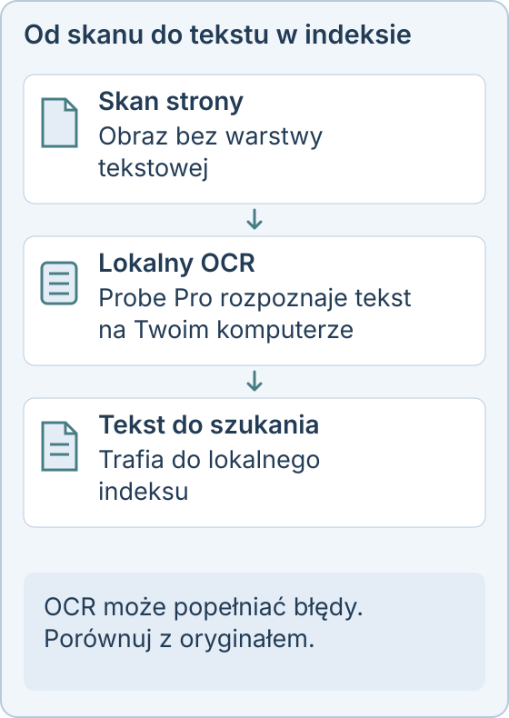

Wyszukiwanie w skanach PDF na Windows
Zeskanowana umowa lub faktura to tylko obraz tekstu, więc zwykłe wyszukiwanie nic w niej nie znajdzie. Linda Probe Pro rozpoznaje tekst za pomocą OCR na Twoim komputerze i dodaje go do lokalnego indeksu.
Dlaczego wyszukiwarka nie widzi skanów
PDF ze skanera często nie ma warstwy tekstowej. Ty widzisz słowa, ale program wyszukujący już nie. Dopóki strona nie przejdzie przez OCR, szukanie nazwiska lub numeru umowy nic nie zwróci.
Co robi Linda Probe
Dodaj folder, a Probe go zindeksuje. Pro rozpoznaje skany i potrafi tworzyć PDF z warstwą tekstową. Potem możesz szukać dokładnych słów lub opisać to, co pamiętasz, obejrzeć podgląd i otworzyć oryginalny plik. Modele OCR obsługują alfabet łaciński i cyrylicę.

Pliki zostają na Twoim komputerze
Indeksowanie, OCR i wyszukiwanie działają lokalnie, a dokumenty nie są wysyłane do operatora. Internet jest potrzebny do pobierania modeli, aktualizacji i weryfikacji licencji.
Czego się spodziewać
Jakość OCR zależy od skanu. Na pogniecionych stronach, przy niskiej rozdzielczości i w piśmie odręcznym mogą pojawić się błędy, dlatego ważne dokumenty porównuj z oryginałem. Najpierw sprawdź program na własnych plikach.

Probe Pro kosztuje 10 USD jednorazowo dla jednej osoby (do 3 urządzeń), 30 USD jednorazowo dla maksymalnie 10 osób lub 500 USD rocznie dla organizacji. Osobiste, niekomercyjne korzystanie z podstawowych funkcji jest bezpłatne. Podatki i kwota końcowa są widoczne przed zapłatą.
Linda Probe działa w systemach Windows 10 i 11 (x64). Dodatkowe modele są pobierane po aktywacji i wymagają internetu, miejsca na dysku oraz zgodnego sprzętu. Instalator nie ma jeszcze podpisu cyfrowego, więc Windows SmartScreen może wyświetlić ostrzeżenie.